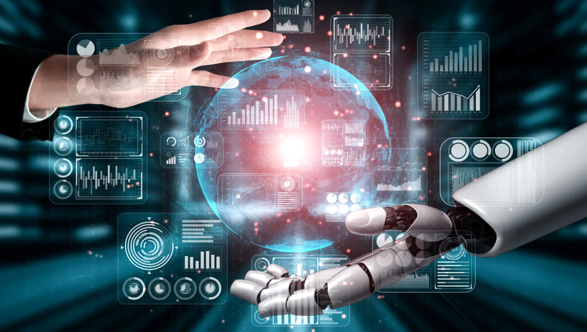
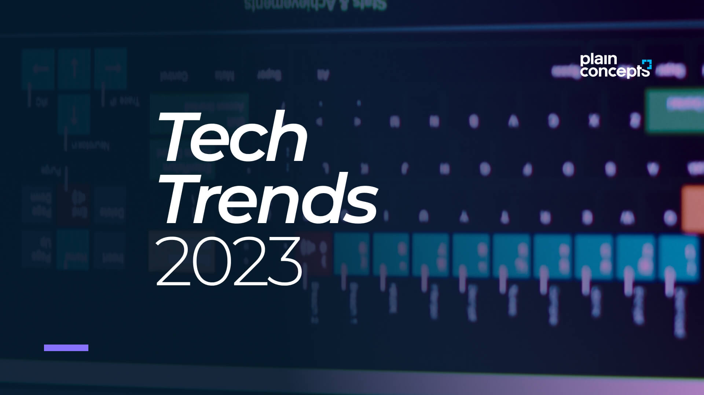

Artificial Intelligence (AI) and Automation are two of the biggest technology trends that will continue to transform industries in 2023. AI will enable machines to learn and make decisions like humans, while automation will streamline processes and reduce human error. AI and automation will be used in industries like healthcare, finance, manufacturing, and logistics, and will help companies save time, reduce costs, and improve productivity..
T industry mergers and acquisitions—including some with multibillion-dollar price tags—have continued in 2023 despite economic uncertainty, rising interest rates and tighter capital. Here’s a look at the biggest tech mergers and acquisitions that have been announced, completed or are still in the works in 2023 (so far).
The study, Financial Services State of the Nation Survey 2023, also revealed that 83 per cent of the 956 professionals surveyed believe their institution is interested in generative AI.
A new type of superconductor may just be what physicists have been searching for over the past 40 years.
Superconductivity is the property of zero electrical resistance at ultralow temperatures and was discovered in 1911 by the Dutch physicist Kamerling-Ohnes. It plays a crucial role in many industries and technologies, ranging from quantum computing to energy.